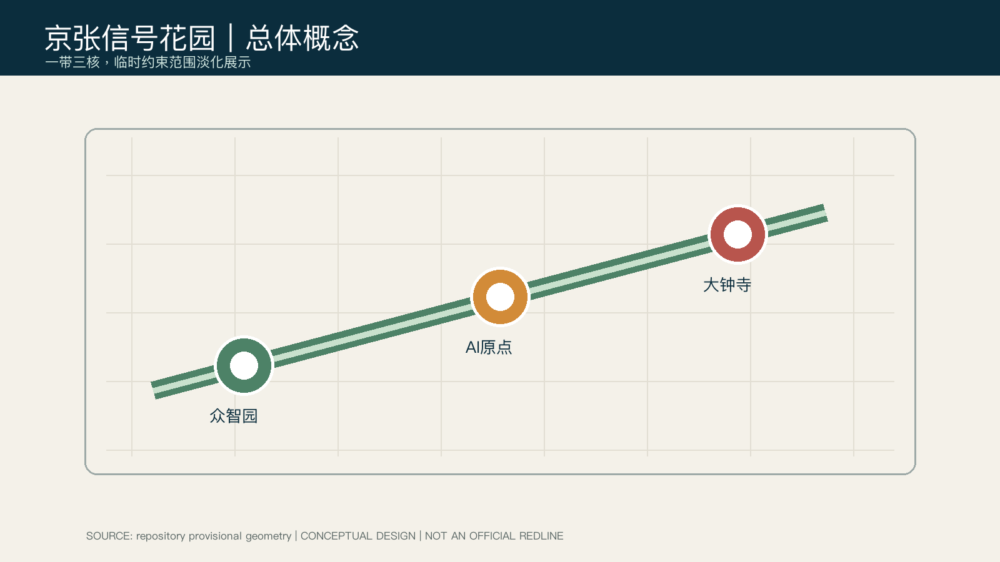
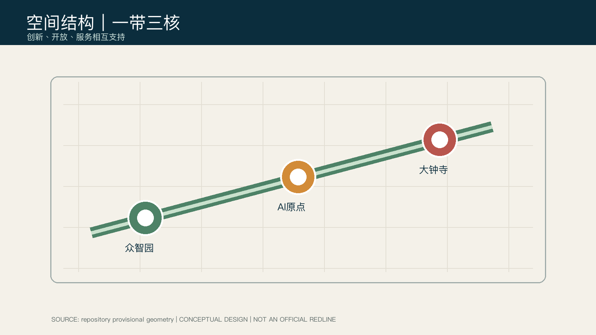
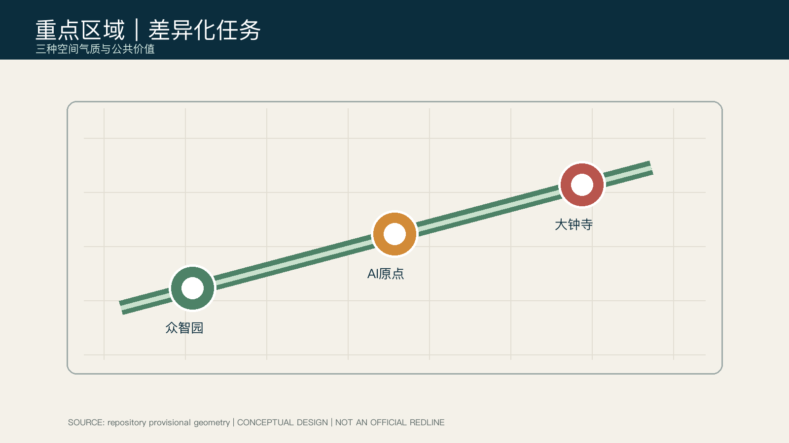

临时约束范围：不是官方红线；正式数据到位后必须统一复算。



11.41 km²
12.34%
7.33%
一带三核串联开源发布厅、安全治理沙盒、端侧算力驿站与路演客厅。任务覆盖矩阵覆盖 1.3、1.4、1.5 与 agent.1-agent.6；自检记录确定性、空间、视觉与专业证据四道检查。
引用官方公告与任务书；仓库临时几何只用于入口自检。官方红线、控规、道路、市政、权属与文保条件仍待补齐。